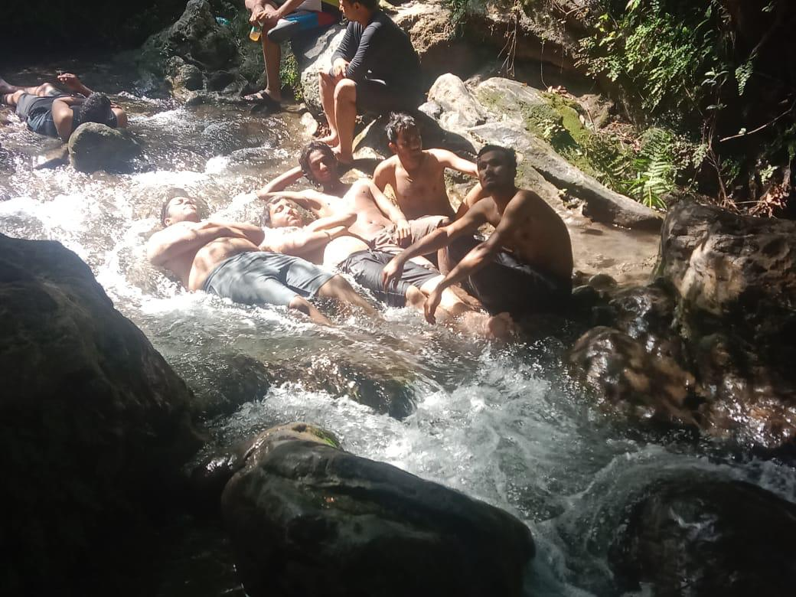

Travel
Places I've been and memories I've made.
Dehradun, India

Experienced the perfect blend of culture and nature. Learned to surf in Canggu, explored Ubud's rice terraces, and participated in a traditional ceremony. The warm hospitality and vibrant culture made it an unforgettable journey.
Mussorie, India
Hiked through the Canadian Rockies. The turquoise lakes and snow-capped peaks were breathtaking. Spent evenings stargazing and learning about local wildlife. The pristine nature and fresh mountain air were rejuvenating.
Barcelona, Spain

Wandered through Gaudi's architectural masterpieces. The Sagrada Familia was even more impressive in person. Enjoyed tapas and learned about Catalan culture. The city's vibrant energy and rich history made it an unforgettable experience.
Kyoto, Japan

Explored ancient temples and traditional gardens. The Fushimi Inari shrine at sunrise was magical. Learned about tea ceremonies and tried my hand at calligraphy. The blend of traditional culture and modern life in Kyoto is truly unique.